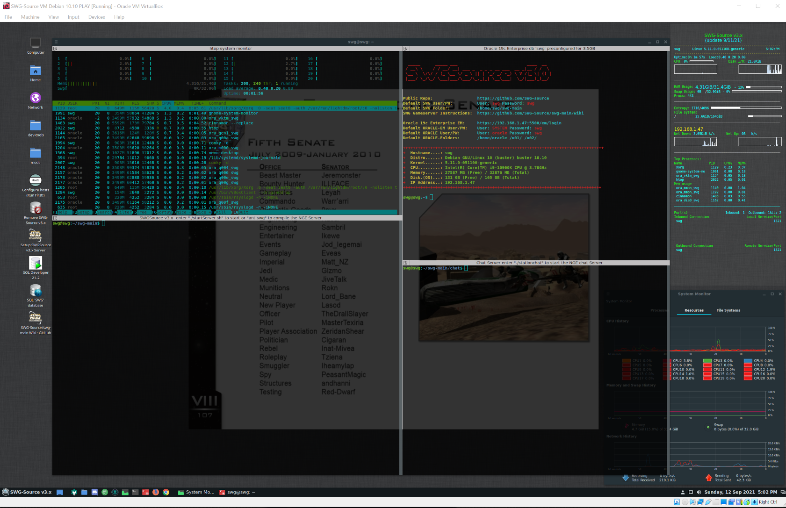
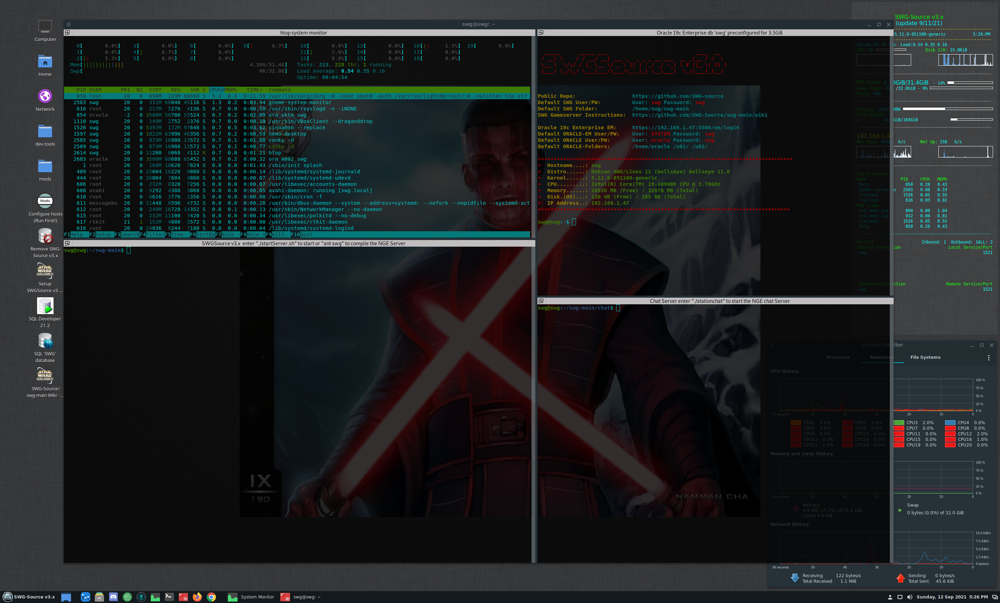

Erusman
Open Source SWG Developer
SWGvms
This website is dedicated to offering alternate VM's for the SWG-Source github project.
Prerequisites
You will need to have Oracle VirtualBox installed on your host machine before you begin. VirtualBox test version 6.1.27 r146688 is recommended because VirtualBox Guest additions 6.1.27 is pre-installed on each VM. You can download VirtualBox Test builds here: Oracle VirtualBox Testbuilds
Hardware recommendations: 6-8 core processor with 32GB of ram.
All of my pre-built VM's comes configured to use 16GB of ram, 6 cores. You can adjust the processor cores and memory in VirtualBox, depending on your own hardware.
Each VM's Desktop Enviornment is running cinnamon. Default resolution 1920x1200. (drag window to increase resolution, or go to Preferences, fonts and increase/decrease your Text scale factor. If you want xfce, gnome, etc.. you can add that yourself.
Each VM will come configured using 200GB of storage space. SDD's are cheap and you can throw this on a 250GB m.2 sdd etc. pretty easy.
I will include Clonezilla on the boot grub menu. So you can boot into Clonezilla from the VM and clone it over to a bare-metal server.
NOTE: I am not offering guides or support on setting up the VM's IP Address's or VirtualBox. Perhaps in the future when I get the time I will update this page with such a guide. You can refer to SWG-source wiki to get the general idea of how to setup a VM's static IP. However every distro of linux is a little different on setting up static IP's.
All of my pre-built VM's will come defaulted to use the IP of 192.168.1.47 & mac 080027F3A637. I recommend going into your home router setup and reserving the IP of 192.168.1.47 & mac 080027F3A637 to the VM which hosts name is 'swg'. Each VM's desktop does offer a script which will help you configure the VM's host and hostname with a custom IP of your choice. The VM's will come in .ova (Open Virtualization Format 1.0) If you want to keep current configured IP's of (192.168.1.47 and mac be sure to select 'Include all network adapters and MAC address's on import!').
The reason why you must setup the VM's host IP correctly, is that your home router will continously assign a different IP to the VM each time you restart it. And you will need to reconfigure the SWG-Source IP's that the server starts with.
Debian 10.10 VM
Linux Kernel 5.11. SRC Compiler GCC 7. Oracle 19.3 & SQL Developer 21.2

DOWNLOAD Debian 10.10 "BUSTER" SWG-Source VM
Note: Please allow your VM's Oracle Database to shutdown properly. Proper shutdown after exiting your VM is scripted for 35 seconds.
Debian 11 VM
Linux Kernel 5.11. SRC Compiler GCC 9.4. Oracle 19.3 & SQL Developer 21.2

DOWNLOAD Debian 11 "BULLSEYE" SWG-Source VM
https://
Note: Please allow your VM's Oracle Database to shutdown properly. Proper shutdown after exiting your VM is scripted for 35 seconds.
Linux Mint 20.2 VM

DOWNLOAD Linux Mint 20.2 SWG-Source VM
https://
Linux Mint 19.3 VM
DOWNLOAD Linux Mint 19.3 SWG-Source VM
https://
Ubuntu 20.04 LTS VM
DOWNLOAD Ubuntu 20.04 LTS SWG-Source VM
https://